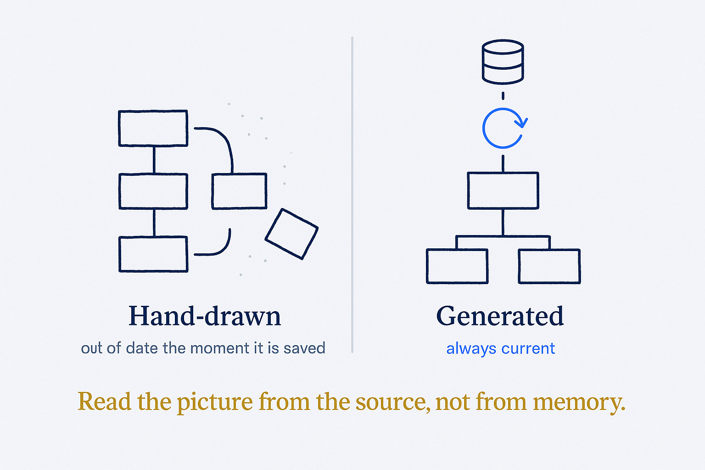

A diagram generated from the structure is always current; a hand-maintained one rots. Read the picture from the source, don't transcribe it.

> 🔗 Sister note: a knowledge-work framing of this concept lives in the SBM library (`W:/systems/concepts/living-diagrams/`). This file is the data/modelling framing — keep both in step when editing.
The visual counterpart to 'a brain that publishes itself': because the structure is real, machine-readable metadata — entities, links, typed fields — you don't draw the picture and maintain it by hand, you generate it. A diagram derived from the source is always correct, because it's read straight from the truth, not transcribed. Change the underlying files and regenerate; the picture is current. The alternative is the stale architecture diagram rotting in a folder, three reorganisations out of date — accurate the day it was drawn, quietly lying ever since. Living diagrams stay honest on their own; stale diagrams are a maintenance debt you always lose. The vault is the source of its own diagrams. Honest limit: a generated diagram is only as good as the structure beneath it and only as readable as the human judgement on top — auto-drawing ten thousand notes gives a hairball, not clarity; knowing what to leave out is the taste a generator can't supply.